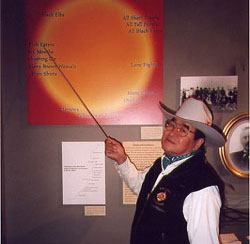

Department
of Africa, Oceania and the Americas >
noticeboard
> events > "A'kaitapiiwa:
Ancestors" exhibition
| Department
of Ethnography loan of Kainai Indian art works to the Sir
Alexander Galt Museum and Archives, Lethbridge, Alberta, Canada
for the "A'kaitapiiwa: Ancestors" exhibition
On May 4 the "A'kaitapiiwa: Ancestors" exhibition opened in Lethbridge, Canada. This is a co-operative project organised by the Sir Alexander Galt Museum and Archives with Red Crow Community College of the Kainai Nation, The British Museum, and the Royal Ontario Museum, Toronto. The Department of Ethnography lent ninety art works - mostly beaded and feather costume - to the exhibition. This material was collected in the 1890s by a couple, the Deane-Freemans, resident on the Reserve, and early in the 20th centuy was divided and sent to London and Toronto. This unique show, with objects from ninety named individuals, brings back together the two halves of the collection, and displays them in the Museum closest to the Blood reserve for the first time. The project was initiated by Louis Soop (Spotted Eagle), language teacher at Red Crow Community College. He visited the collection in Toronto, and learnt from the curator Arni Brownstone that the other half of it was in London. Brownstone acted as guest curator to the show, while Wilma Wood, former director of the Galt Museum, organised the project. The British Museum's loan was installed by Phillip Taylor, from the Department of Ethnography. It is hoped that the collection may travel to another venue in Canada, although, of course, it could never be left on permanent display because of risk of degradation to organic objects from light sources. Ancestors closes in Lethbridge on December 31 2002.
For
further details contact: |
 |
||